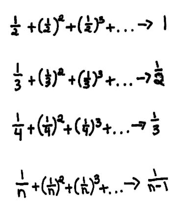

Lizzy and Cheryl, 7th graders, find the sum of an infinite series- 2 ways!
"Using squares (see Mr. Cohen's chapter 1) we found what these infinite series went to:

Let's say you have the problem 2/5 + (2/5)2 + (2/5)3 + ..., what would you do? Normally you would do all the work and spend lots of time on the problem, but what if there was a shortcut? You could go on forever with this problem by just increasing the number of terms. Well, if you want to do it in a flash, then use the simple rule A/(B-A).. (the girls spent a lot of time developing this rule), where A is the numerator, B is the denominator of the original fraction. So 2/5 + (2/5)2 + (2/5)3 + ... would go to 2/(5-2) = 2/3.
Another way to do this was done by one of Mr. Cohen's students, Jeff. Jeff's idea was to change the original fraction into one that has 1 for the numerator. When you use Jeff's way 2/5 becomes 1/2.5 . Then you can use the other technique above. When the problem has 1 for the numerator, you can use the rule that it goes to 1/(n-1), in this case, 1/(2.5-1) = 1/1.5 = 2/3 ".